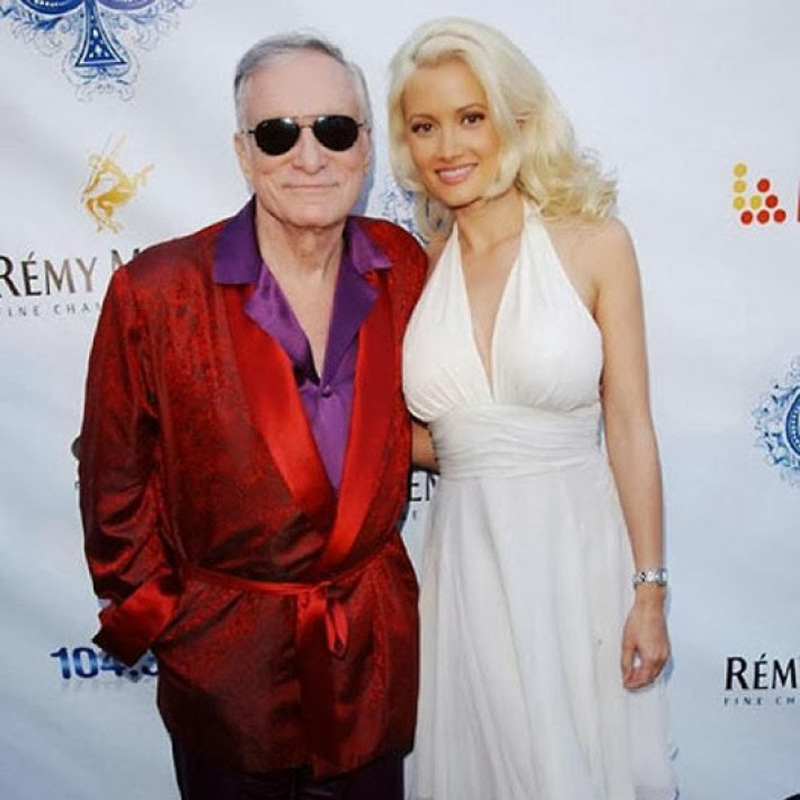

Cum să te vindeci de suferința din dragoste

Ştiai că dragostea este considerată afecţiune psihică, potrivit OMS? Studiile recente ale specialiştilor psihologi, neurologi şi biochimişti au dus la identificarea şi clasificarea (cf. DSM) a ceea ce numesc ,,boala dragostei” sau ,,sindromul inimilor frânte”.
Cercetătorii americani au constatat că, atât în etapa de îndrăgostire, cât şi în cea de suferinţa generată de despărţire, se activează aceeaşi zonă din creier. Analizele sângelui au arătat că numărul foarte mare de hormoni de stres care se secretă poate fi dăunător pentru inimă, care prezintă acelaşi simptom ca la infarct. Citeste mai mult